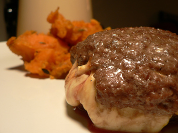

Mark Bittman's Lamburgers
I bought myself Mark Bittman’s How to Cook Everything for Christmas, and I’ve been using it pretty obsessively for the last week. I’m not great at following recipes; I find that I’m always missing some ingredient or piece of equipment and then I close the book and proceed according to my own taste and knowledge. But Mark is pretty trustworthy, and I’m doing my best to follow the directions closely.
Last night, with not much in the house and a desire to try something new, I came across Lamburgers (couldn’t he just call them lamb burgers?) The recipe needed nothing but ground lamb and smoked mozzarella, but even in New York those items can be tricky to find on Sunday night. Murray’s was closed, Citarella was out of lamb, and I wasn’t too interested in hiking up to 14th Street. I came across the Jefferson Market on 6th Avenue, a store I’ve rarely entered. They were about to close, but I gave it a shot anyway.
I approached the butcher counter, which was handsome but half empty. The butcher asked what I needed. When I replied “a pound of ground lamb,” he disappeared into the back. The door was just ajar enough for me to see him, and it took me a minute to realize that he was back there sullying his meat grinder with fresh lamb—just for me! I’ve heard that all butchers are supposed to grind meat fresh, but I’ve only actually seen it happen a few times in my life, and I’m generally too timid to ask.
I was sold on this store right away. I found smoked mozzarella (which they bring up from Di Palo’s) for $6.99 a pound, and I went home, thrilled to have traveled such a short distance, and made my lamburgers.

The recipe is extremely simple: divide a pound of ground lamb into four pieces, and form it into burgers around slices of smoked mozzarella. Broil or grill for about four minutes per side, and you’re done. A slice of melted cheese surrounded by pink meat makes a real man-pleasing meal. I served it with a side of (Mark Bittman’s) simmered sweet potatoes, which I won’t make again even though they tasted fine. I wanted something sweet and colorful next to the burgers, and they fit the bill.
Comments
i always worry that a burger made from anything other than beef would be too rich. tell me how they lie next to a beef burger…
(i do love all meat to begin with, for some reason i have a bias for burgers.)
Jefferson Market – ah the memories. When I had FIRST moved to NYC and was in a temp sublet off 6th on 16th- I discovered them and Balduccis and life was hard when I moved to perm digs on 109th street!
Add a comment